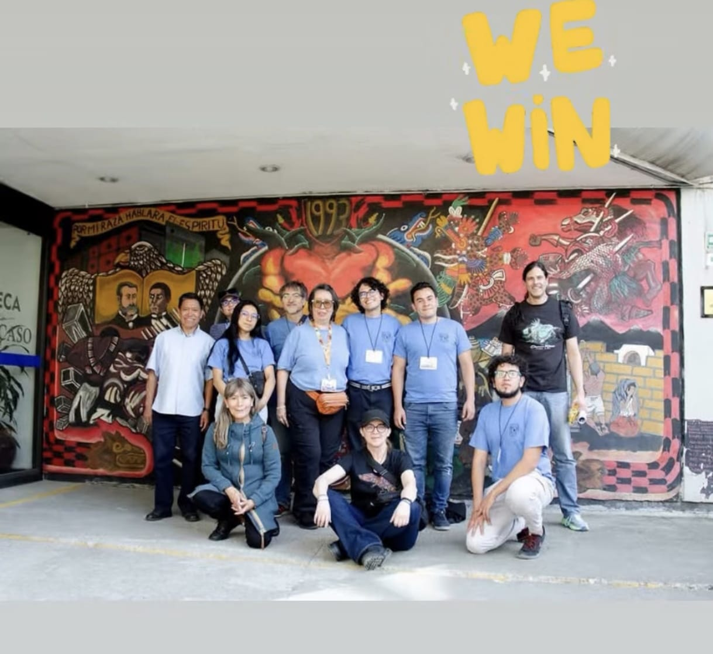
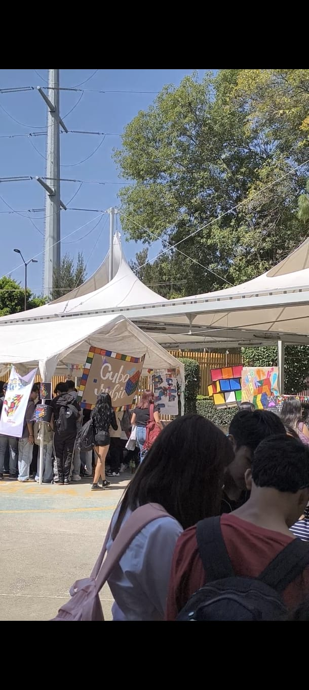
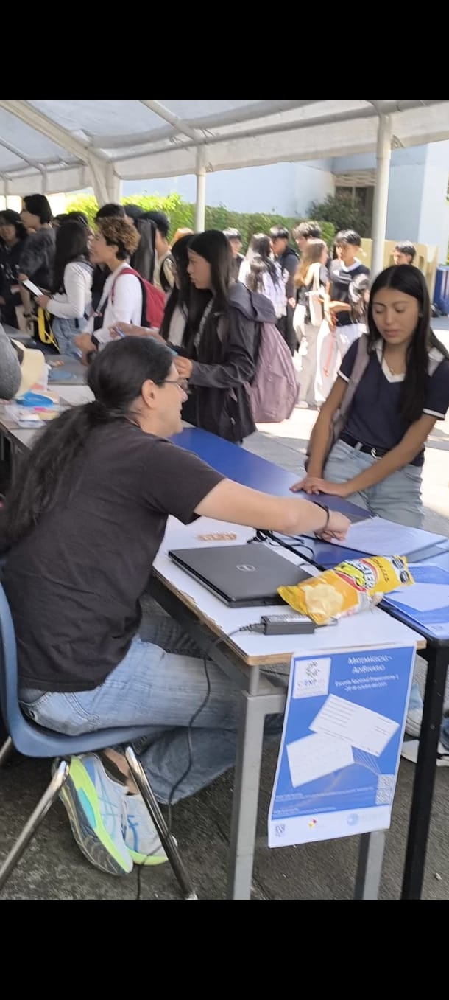
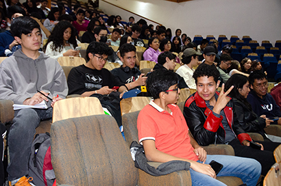
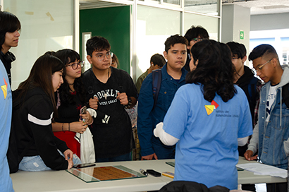
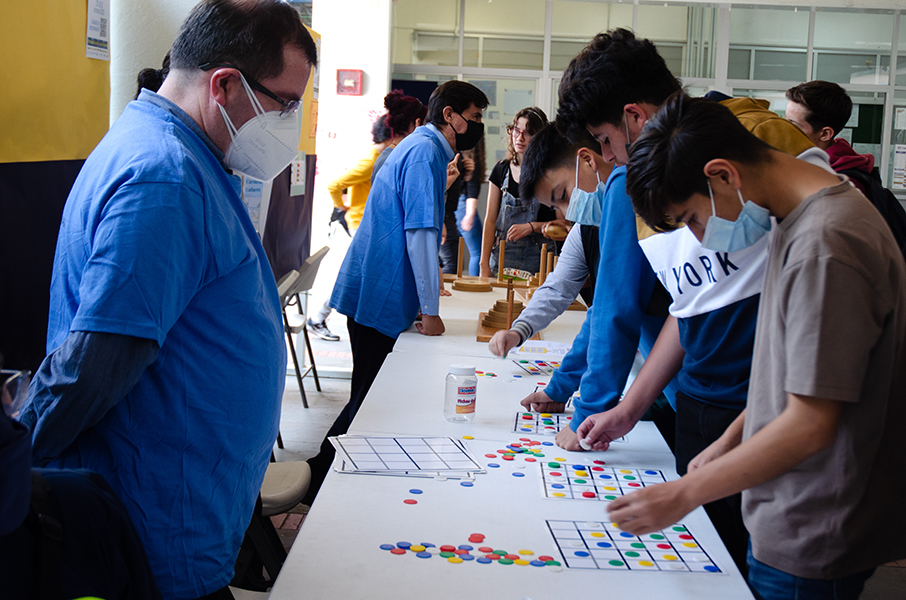
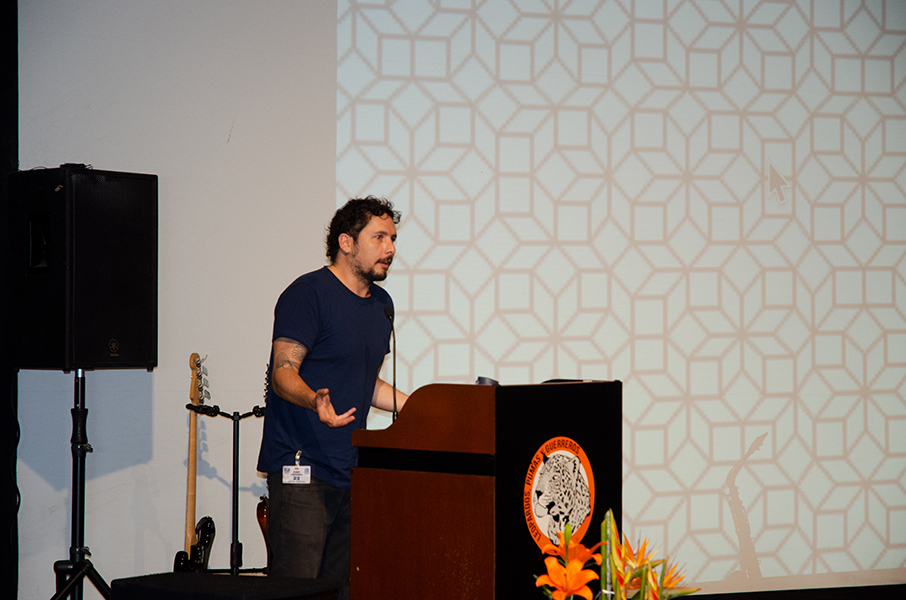
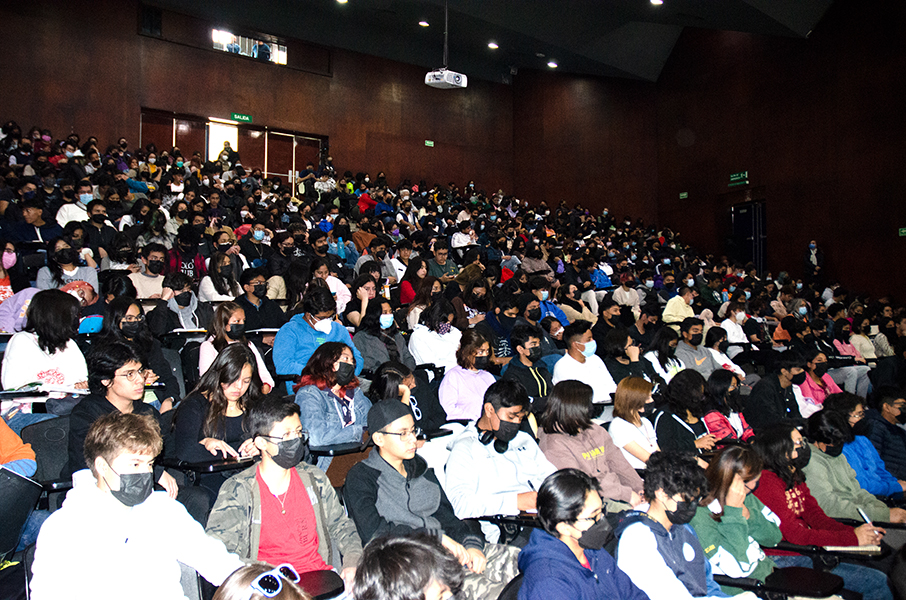

CIENPiés is an itinerant celebration of mathematics, science, and art, established as a strategic collaboration between the Institute of Mathematics (IMUNAM) and the National Preparatory School (ENP) system. The initiative aims to strengthen the link between university research and high school education (bachillerato), visiting different campuses since 2023 to spark student interest through a multidisciplinary approach.
As part of the Festival Matemático delegation, I participated in these journeys by facilitating interactive workshops and ludic activities designed to generate awe and enthusiasm. The program—which integrates conferences, book displays, and even mathematical concerts—seeks to deconstruct stereotypes, presenting mathematics not as a difficulty, but as a fundamental and creative resource for understanding the world.







